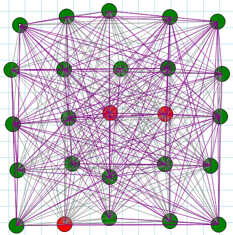

Part I - Introduction and Basic Concepts (This Article)
Kademlia, according to a paper1 published in 2015 by Xing Shi Cai and Luc Devoyre, "is the defacto standard searching algorithm for P2P (peer-to-peer) networks on the Internet." It seemed like a good choice for doing a deep dive in P2P DHT implementations, ideally finding a solid existing implementation rather than rolling my own. Alas, it was not to be. As it turns out, there are two different versions of the specification, both having certain contradictions, particularly the second one. This results in a variety of implementations, and most tend to have a loose interpretation of the contradictory and ambiguous aspects of the specification. On GitHub, I've found only two that appear both reasonably complete and well implemented:
 Note that the Python 3.5 branch should be
used, the master branch contains some bugs and is written for Python 2.
Note that the Python 3.5 branch should be
used, the master branch contains some bugs and is written for Python 2.
Rarely do I end up with multiple versions of an article. What started off with the intent of "here's the spec, let's find someone that did a decent job coding it" quickly became "here's the spec, let's roll our own using the spec" to "wait, the spec is contradicting itself here, it's confusing there, and ambiguous over there" to "OMG, there's two different versions of the spec!" As a result, this is actually my third pass at writing an article on Kademlia that makes some kind of sense. Special thanks go to Brian Muller who has put up with a lot of my questions about the specification itself.
From Wikipedia:
Kademlia is a distributed hash table for decentralized peer-to-peer computer networks designed by Petar Maymounkov and David Mazi�res in 2002. It specifies the structure of the network and the exchange of information through node lookups. Kademlia nodes communicate among themselves using UDP. A virtual or overlay network is formed by the participant nodes. Each node is identified by a number or node ID. The node ID serves not only as identification, but the Kademlia algorithm uses the node ID to locate values (usually file hashes or keywords). In fact, the node ID provides a direct map to file hashes and that node stores information on where to obtain the file or resource.
Kademlia is used in file sharing networks. For example, BitTorrent8 uses a DHT based on an implementation of the Kademlia algorithm. Kad network9 uses the Kademlia protocol, with eMule being an open source Windows client.
While this is a personal venture, it is also a recognition that there are some interesting and complicated technologies coming down the road that need to be properly understood, and protocols like Kademlia are a good starting point for looking at a P2P DHT implementation. As to why Kademlia specifically, the summary to the spec says it best:
"With its novel XOR-based metric topology, Kademlia is the first peer-to-peer system to combine provable consistency and performance, latency-minimizing routing, and a symmetric, unidirectional topology. Kademlia furthermore introduces a concurrency parameter, a, that lets people trade a constant factor in bandwidth for asynchronous lowest-latency hop selection and delay-free fault recovery. Finally, Kademlia is the first peer-to-peer system to exploit the fact that node failures are inversely related to uptime."
As Petar Maymounkov, one of the co-creators of Kademlia says: "it is a Turkish word for a �lucky man� and, more importantly, is the name of a mountain peak in Bulgaria." OK then.
My major issue with zencoders C# implementation is that it is entangled with the intended application -- a P2P audio file application. Brian Muller's implementation is a straight forward library. In perusing numerous GitHub repo's, I found many implementations that were incomplete or clearly buggy, simply by inspecting the code. Beware of what's out there!
I have not looked carefully at implementations in other languages, those being primarily written in Java and Javascript (personal lack of interest in those languages) and Go (lack of familiarity with the language makes it difficult to read.) Looking briefly at implementations in these other languages, it's fairly easy to tell which version of the specification they implement, so again, beware that depending on which specification the author worked with, you can have very different implementations. For example, an implementation in Java makes a very specific (yet seemingly arbitrary) rule about bucket splitting (we'll get to that) that isn't found in the spec.
C# 7 with .NET framework 4.7 is required to build this code.
What I call Version 1 of the Kademlia specification: http://www.cs.rice.edu/Conferences/IPTPS02/109.pdf
What I call Version 2 of the Kademlia specification: https://pdos.csail.mit.edu/~petar/papers/maymounkov-kademlia-lncs.pdf
Mike De Boer's description of k-buckets: https://github.com/mikedeboer/node-k-bucket
Brian Muller's Python implementation: https://github.com/bmuller/kademlia
zencoders' implementation: https://github.com/zencoders/sambatyon/tree/master/Kademlia/Kademlia
Jim Dixon's post on the two different versions of the specification: https://www.mail-archive.com/p2p-hackers@lists.zooko.com/msg00039.html
Jim Dixon's description of the shorter specification: http://xlattice.sourceforge.net/components/protocol/kademlia/specs.html#FIND_NODE
Jim Dixon's description of Section 2.4 of the specification: https://www.mail-archive.com/p2p-hackers@lists.zooko.com/msg00042.html
Implementation of Kademlia Distributed Hash Table, Semester Thesis Writen by Bruno Spori, Swiss Federal Institute of Technology Zurich: http://pub.tik.ee.ethz.ch/students/2006-So/SA-2006-19.pdf
Distributed Hash Tables and Self Organizing Networks, lecture by Jonathan Perry, MIT: http://css.csail.mit.edu/6.824/2014/notes/dht/dht.pdf
IPFS - Content Addressed, Versions, P2P File System (Draft 3): https://ipfs.io/ipfs/QmR7GSQM93Cx5eAg6a6yRzNde1FQv7uL6X1o4k7zrJa3LX/ipfs.draft3.pdf
S/Kademlia: A Practicable Approach Towards Secure Key-Based Routing: http://www.tm.uka.de/doc/SKademlia_2007.pdf
Improving Lookup Performance over a Widely-Deployed DHT: http://www.barsoom.org/papers/infocom-2006-kad.pdf
Review on Detection and Mitigation of Sybil attack in the network, Procedia Computer Science 78 (2016) 395-401: https://tinyurl.com/y9a7ekzy
Flowchain: A Case Study on Building a Blockchain for the IoT: http://schd.ws/hosted_files/lc3china2017/43/Flowchain-LC3_2017_Beijing-20170614.pdf
Distributed Ledger Technology: beyond block chain, A report by the UK Government Chief Scientific Adviser: https://www.gov.uk/government/uploads/system/uploads/attachment_data/file/492972/gs-16-1-distributed-ledger-technology.pdf
Some of the things the specification does not address:
The goal in this article is to:
In this document, fuchsia text is used when quoting from the Kademlia specification and other documents.
Some of the unit tests set up specific conditions for testing code. Others use a randomly generated ID's (node ID's and keys) and verify results through a different implementation of the same algorithm. Those tests should probably be revised to set up specific conditions. To mitigate one's horror at using random values in unit tests, the Random class is seed in debug mode with the same value, and is exposed as a public static field so that some unit tests can perform their tests with a range of seeds:
#if DEBUG public static Random rnd = new Random(1); #else private static Random rnd = new Random(); #endif
At some point I might put more work into improving the unit tests and removing the random ID key generation, except for the distribution tests of course.
Also, most of these unit tests are really system-level tests, or at least partial system tests. Actual unit tests of specific code sections in a particular method, well, it gets inane rather quickly. So you'll see a lot of setup stuff being done in the higher level tests.
The code presented here is incremental, meaning that as additional features are discussed and added, code is updated to reflect those new features and their unit tests. Not every refactoring is included in the code here, therefore its strongly recommended if you're interested in a particular method, use the final implementation in the actual code base.
The latest update to the code and the documentation can be found on GitHub: https://github.com/cliftonm/Kademlia
The Kademlia specification essentially consists of several sub-algorithms:
The most complex part of the code is in the registration of new peers, as this involves some magic numbers based on the authors' research into the performance of other networks as Chord10 and Pasty11 and the behavior of peers in those networks.
There are several terms used in general discussions of P2P systems.
An overlay network is one in which each node keeps a (usually partial) list of other nodes participating in the network.
Terms used specifically in the Kademlia specification are described here.
A node (also known as a contact) is a peer in the network.
This is a 160 bit node identifier, obtained from a SHA1 hash.
A collection of at most k nodes (or contacts.) Also simply called a bucket. Each node handles up to k contacts within a range of ID's. Initially, the ID range is the entire spectrum from 0 <= id <= 2160 - 1.
Peers store values based on 160 bit SHA1 hashed keys. Each stored entry consists of a key-value pair.
The router manages the collection of k-buckets and also determines into which nodes a key-value should be stored.
The distance between a host and the key is an XOR computation of the host's ID with the key.
A prefix is the term used to describe the n most significant bits (MSB) of an ID.
The depth of a bucket is defined as the shared prefix of a bucket. Since buckets are associated with ranges from 2i to 2i+1 - 1 where 0 <= i < 160, one could say that the depth of a bucket is 160 - i. We'll see later that this may not be the case.
A bucket split is something potentially happens when a node's k-bucket is full -- meaning it has k contacts -- and a new contact wants to register within the bucket's range. At this point, an algorithm kicks in that:
If the bucket can't be split, there is a third fallback that replaces an old contact that is no longer responding with the new contact.
The Kademlia protocol consists of four Remote Procedure Calls (RPC's). All RPC's require that the sender provides a random RPC ID which must be echoed by the recipient: In all RPCs, the recipient must echo a 160-bit random RPC ID, which provides some resistance to address forgery, PINGS can also be piggy-backed on RPC replies for the RPC recipient to obtain additional assurance of the sender�s network address.
Any time a peer is contacted with any of the four RPC's, it goes through the process of adding/updating the contact in its own list. In the description below, the concept of "closeness" will be discussed in detail later.
The PING RPC probes a node to see if it is online. This is considered a "primitive" function, in that it just returns the random RPC ID that accompanied the Ping request.
STORE instructs a node to store a (key, value) pair for later retrieval. This is also considered a "primitive" function, as it again just returns the random RPC ID that accompanied the Store request. To store a (key,value) pair, a participant locates the k closest nodes to the key and sends them STORE RPCS. The participant does this by inspecting its own k closest nodes to the key.
FIND_NODE takes a 160-bit ID as an argument. The recipient of a the RPC returns (IP address, UDP port, Node ID) triples for the k nodes it knows about closest to the target ID. These triples can come from a single k-bucket, or they may come from multiple k-buckets if the closest k-bucket is not full. In any case, the RPC recipient must return k items (unless there are fewer than k nodes in all its k-buckets combined, in which case it returns every node it knows about).
In an abstracted communication protocol, the recipient needs to return information about the protocol -- the kind of protocol and whatever is required to contact a peer using that protocol. If multiple protocols are supported, we can consider two options:
Other considerations when supporting multiple protocols are:
None of the issues of different protocols is discussed in the spec, this is purely my own enhancement.
The Find Node protocol has several purposes:
FIND_VALUE behaves like FIND_NODE - returning (IP address, UDP port, Node ID) triples - with one exception. If the RPC recipient has received a STORE RPC for the key, it just returns the stored value.
If the Find Value RPC returns a list of other peers, it is up to the requester to continue searching for the desired value from that list. Also, note this technique for caching key-values:
To find a (key,value) pair, a node starts by performing a lookup to find the k nodes with IDs closest to the key. However, value lookups use FIND_VALUE rather than FIND_NODE RPCS. Moreover, the procedure halts immediately when any node returns the value. For caching purposes, once a lookup succeeds, the requesting node stores the (key,value) pair at the closest node it observed to the key that did not return the value.
Additionally, each node re-publishes (key,value) pairs as necessary to keep them alive, as described later in Section 2.5. This ensures persistence (as we show in our proof sketch) of the (key,value) pair with very high probability. For Kademlia�s current application (file sharing), we also require the original publisher of a (key,value) pair to republish it every 24 hours. Otherwise, (key,value) pairs expire 24 hours after publication, so as to limit stale index information in the system. For other applications, such as digital certificates or cryptographic hash to value mappings, longer expiration times may be appropriate.
If we want to consider using Kademlia in a distributed ledger implementation, it would seem necessary that key-values never expire, otherwise this would result in an integrity loss of the ledger data.
Because of the uni-directionality of the topology, future searches for the same key are likely to hit cached entries before querying the closest node. During times of high popularity for a certain key, the system might end up caching it at many nodes. To avoid �over-caching,� we make the expiration time of a (key,value) pair in any node�s database exponentially inversely proportional to the number of nodes between the current node and the node whose ID is closest to the key ID. While simple LRU eviction would result in a similar lifetime distribution, there is no natural way of choosing the cache size, since nodes have no a priori knowledge of how many values the system will store.
Buckets are generally kept fresh by the traffic of requests traveling through nodes. To handle pathological cases in which there are no lookups for a particular ID range, each node refreshes any bucket to which it has not performed a node lookup in the past hour. Refreshing means picking a random ID in the bucket�s range and performing a node search for that ID.
To join the network, a node u must have a contact to an already participating node w. u inserts w into the appropriate k-bucket. u then performs a node lookup for its own node ID. Finally, u refreshes all k-buckets further away than its closest neighbor. During the refreshes, u both populates its own k-buckets and inserts itself into other nodes� k-buckets as necessary.
Let's cover some basic implementation requirements for a node first.
We could write our own byte array manipulation and comparison operators,
which is what zencoders did, or we could use the BigInteger class to handle the
range of ID's from 0 <= id <= 2160 - 1. In ended up using
BigInteger has simply made the code smaller. As a side node, I was
impressed with Python's ability to handle these values without any special
classes:
>>> 2 ** 160 1461501637330902918203684832716283019655932542976L
Participating computers each have a node ID in the 160-bit key space (Introduction) which is simple enough.
But then there's this: Kademlia nodes store contact information about each other to route query messages. For each 0 < i < 160, every node keeps a list of [contacts] of distance between 2i and 2i+1 from itself. We call these lists k-buckets. k is chosen such that any given k nodes are very unlikely to fail within an hour of each other (for example k = 20). (Section 2.2) How is this distance defined? Is this the XOR distance or the integer distance? And when the spec says "distance from itself", what two values are being compared? Why even make this comparison?
Initially, a node u�s routing tree has a single node� one k-bucket covering the entire ID space. (Section 2.4) So from Section 2.2, we have each node contain 159 k-buckets (0 < i < 160) covering 2i through 2i+1, and from Section 2.4, we have a node initialized with one k-bucket. You can see the former specification implemented in zencoders code:
private const int BUCKET_SIZE = 20; // "K" in the spec
private const int NUM_BUCKETS = 8 * ID.ID_LENGTH; // One per bit in an ID
private List<List<Contact>> buckets;
private List<DateTime> accessTimes; // last bucket write or explicit touch
private ID ourID;
/// <summary>
/// Make a new bucket list, for holding node contacts.
/// </summary>
/// <param name="ourID">The ID to center the list on.</param>
public BucketList(ID ourID)
{
this.ourID = ourID;
buckets = new List<List<Contact>>(NUM_BUCKETS);
accessTimes = new List<DateTime>();
// Set up each bucket
for(int i = 0; i < NUM_BUCKETS; i++)
{
buckets.Add(new List<Contact>(BUCKET_SIZE));
accessTimes.Add(default(DateTime));
}
}
Here 8 * ID.ID_LENGTH (8 * 20 = 160) buckets are created at the
get go, each with 20 contacts (the suggested k value.) This is
hard-wired in the zencoders implementation.
You can see the latter specification in the Brian Muller's Python code:
def flush(self): self.buckets = [KBucket(0, 2 ** 160, self.ksize)]
Here, a single bucket is created spanning the ID space. The Python code is correct because it also implements bucket splitting, which is in the second version of the specification.
In the former specification, this limits the total number of contacts that your server can handle to 160 * 20, or 3200 contacts.
After resolving the ambiguity and contradiction, we can implement most of the relevant classes. Note that some of the properties in the following implementation will be discussed later.
When we're all done with the initial implementation, we have this class model:
using System.Numerics;
namespace Clifton.Kademlia
{
public class ID
{
#if DEBUG // For unit testing.
public BigInteger Value { get { return id; } }
#endif
protected BigInteger id;
/// <summary>
/// Construct the ID from a byte array.
/// </summary>
public ID(byte[] data)
{
IDInit(data);
}
/// <summary>
/// Construct the ID from another BigInteger value.
/// </summary>
public ID(BigInteger bi)
{
id = bi;
}
/// <summary>
/// Initialize the ID from a byte array, appending a 0 to force unsigned values.
/// </summary>
protected void IDInit(byte[] data)
{
Validate.IsTrue(data.Length == Constants.ID_LENGTH_BYTES, "ID must be " + Constants.ID_LENGTH_BYTES + " bytes in length.");
id = new BigInteger(data.Append0()); }
}
}
 Two things of note here.
Two things of note here.
/// <summary>
/// Append a 0 to the byte array so that when converting to a BigInteger, the value remains positive.
/// </summary>
public static byte[] Append0(this byte[] b)
{
return b.Concat(new byte[] { 0 }).ToArray();
}
[TestMethod]
public void LittleEndianTest()
{
byte[] test = new byte[20];
test[0] = 1;
Assert.IsTrue(new ID(test).Value == new BigInteger(1), "Expected value to be 1.");
}
[TestMethod]
public void PositiveValueTest()
{
byte[] test = new byte[20];
test[19] = 0x80;
Assert.IsTrue(new ID(test).Value == BigInteger.Pow(new BigInteger(2), 159), "Expected value to be 1.");
}
[TestMethod, ExpectedException(typeof(IDLengthException))]
public void BadIDTest()
{
byte[] test = new byte[21];
new ID(test);
}
At the moment, the router simply manages the host's node:
namespace Clifton.Kademlia
{
public class Router
{
#if DEBUG // for unit testing
public Node Node { get { return node; } }
#endif
protected Node node;
public Router(Node node)
{
this.node = node;
}
}
}
The contact class manages the contact's ID, last seen, and network connectivity. Because I want to abstract the way network protocols are handled, such that it is easy to test nodes in a virtual (in-memory) network, or nodes that use different protocols (UDP, TCP/IP, WebSockets, etc.) the network protocol is abstracted in an interface.
using System;
namespace Clifton.Kademlia
{
public class Contact
{
#if DEBUG // For unit testing
public IProtocol Protocol { get; set; }
#else
public IProtocol Protocol { get; protected set; }
#endif
public DateTime LastSeen { get; protected set; }
public ID ID { get; protected set; }
/// <summary>
/// Initialize a contact with its protocol and ID.
/// </summary>
public Contact(IProtocol protocol, ID contactID)
{
Protocol = protocol;
ID = contactID;
Touch();
}
/// <summary>
/// Update the fact that we've just seen this contact.
/// </summary>
public void Touch()
{
LastSeen = DateTime.Now;
}
}
}
Each k-bucket maintains a list of up to k contacts.
using System.Collections.Generic;
using System.Numerics;
namespace Clifton.Kademlia
{
public class KBucket
{
#if DEBUG // For unit testing.
public List<Contact> Contacts { get { return contacts; } }
public BigInteger Low { get { return low; } }
public BigInteger High { get { return high; } }
#endif
protected List<Contact> contacts;
protected BigInteger low;
protected BigInteger high;
/// <summary>
/// Initializes a k-bucket with the default range of 0 - 2^160
/// </summary>
public KBucket()
{
contacts = new List<Contact>();
low = 0;
high = BigInteger.Pow(new BigInteger(2), 160);
}
/// <summary>
/// Initializes a k-bucket with a specific ID range.
/// </summary>
public KBucket(BigInteger low, BigInteger high)
{
contacts = new List<Contact>();
this.low = low;
this.high = high;
}
/// <summary>
/// Add a contact to the bucket, at the end, as this is the most recently seen contact.
/// A full bucket throws an exception.
/// </summary>
public void AddContact(Contact contact)
{
Validate.IsTrue<TooManyContactsException>(contacts.Count < Constants.K, "Bucket is full");
contacts.Add(contact);
}
}
}
[TestMethod, ExpectedException(typeof(TooManyContactsException))]
public void TooManyContactsTest()
{
KBucket kbucket = new KBucket();
// Add max # of contacts.
Constants.K.ForEach(n => kbucket.AddContact(new Contact(null, new ID(n))));
// Add one more.
kbucket.AddContact(new Contact(null, new ID(21)));
}
The bucket list class is a high level singleton container for buckets and operations that manipulate buckets. For the moment, most of this is stubbed with minimal behavior:
using System.Collections.Generic;
namespace Clifton.Kademlia
{
public class BucketList
{
#if DEBUG // Used for unit testing.
public List<KBucket> Buckets { get { return buckets; } }
#endif
protected List<KBucket> buckets;
protected ID ourID;
/// <summary>
/// Initialize the bucket list with our host ID and create a single bucket for the full ID range.
/// </summary>
/// <param name="ourID"></param>
public BucketList(ID ourID)
{
this.ourID = ourID;
buckets = new List<KBucket>();
// First kbucket has max range.
buckets.Add(new KBucket());
}
public void AddContact(Contact contact)
{
// to be implemented...
}
}
}
The node class is another high level singleton container for handling the Kademlia commands sent over the wire. This is mostly stubbed for now:
using System.Collections.Generic;
namespace Clifton.Kademlia
{
public class Node
{
#if DEBUG // For unit testing.
public BucketList BucketList { get { return bucketList; } }
public IStorage Storage { get { return storage; } }
public Contact OurContact { get { return ourContact; } }
#endif
protected Contact ourContact;
protected BucketList bucketList;
public Node(Contact us, IStorage storage)
{
ourContact = us;
bucketList = new BucketList(us.ContactID);
this.storage = storage;
}
/// <summary>
/// Someone is pinging us. Register the contact and respond.
/// </summary>
public Contact Ping(Contact sender)
{
// TODO...
return ourContact;
}
/// <summary>
/// Store a key-value pair in our storage space.
/// </summary>
public void Store(Contact sender, ID keyID, string val)
{
// TODO...
}
/// <summary>
/// From the spec: FindNode takes a 160-bit ID as an argument. The recipient of the RPC returns (IP address, UDP port, Node ID) triples
/// for the k nodes it knows about closest to the target ID. These triples can come from a single k-bucket, or they may come from
/// multiple k-buckets if the closest k-bucket is not full. In any case, the RPC recipient must return k items (unless there are
/// fewer than k nodes in all its k-buckets combined, in which case it returns every node it knows about).
/// </summary>
/// <returns></returns>
public (List<Contact> contacts, string val) FindNode(Contact sender, ID toFind)
{
// TODO...
return (null, null);
}
/// <summary>
/// Returns either a list of close contacts or a the value, if the node's storage contains the value for the key.
/// </summary>
public (List<Contact> contacts, string val) FindValue(Contact sender, ID keyID)
{
// TODO:
return (null, null);
}
}
}
 Of note here is the interface
Of note here is the interface IStorage which abstracts the storage mechanism
for key-value pairs.
The Dht class is the "server" - the entry point for instantiating our peer. At the moment, the Dht class is simply a container for the Router:
using System;
namespace Clifton.Kademlia
{
public class Dht
{
#if DEBUG // for unit testing
public Router Router { get { return router; } }
#endif
protected Router router;
}
}
To Be Continued... Part II - Adding Contacts
[1] - http://www.tandfonline.com/doi/abs/10.1080/15427951.2015.1051674?src=recsys&journalCode=uinm20
[2] - https://github.com/zencoders/sambatyon/tree/master/Kademlia/Kademlia
[3] - http://xlattice.sourceforge.net/components/protocol/kademlia/specs.html
[4] - https://github.com/bmuller/kademlia
[5] - https://en.wikipedia.org/wiki/Smart_contract
[6] - http://sandhill.com/article/is-data-decentralization-the-new-trend/
[7] - https://arxiv.org/pdf/1506.03471.pdf
[8] - https://en.wikipedia.org/wiki/BitTorrent
[9] - https://en.wikipedia.org/wiki/Kad_network
[10] - https://en.wikipedia.org/wiki/Chord_(peer-to-peer)
[11] - https://en.wikipedia.org/wiki/Pastry_(DHT)
[12] - https://www.mail-archive.com/p2p-hackers@lists.zooko.com/msg00042.html
[15] - https://en.wikipedia.org/wiki/Kademlia
[16] - https://forum.emule-project.net/index.php?showtopic=32335[17] - http://www.emule-project.net/home/perl/general.cgi?l=1
[18] - https://forum.emule-project.net/index.php?showtopic=32335&view=findpost&p=214837
[19] - http://pub.tik.ee.ethz.ch/students/2006-So/SA-2006-19.pdf